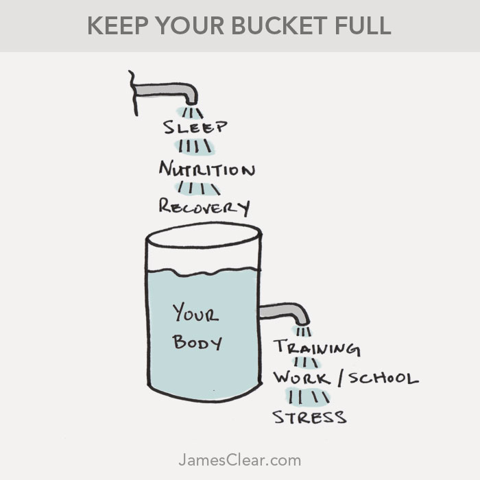
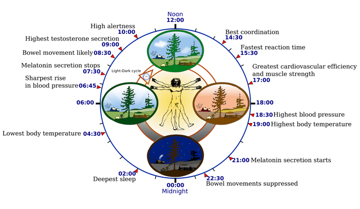

If you want to learn how to sleep better, then you’re in the right place. This guide will walk you through everything you need to know if you want to get better sleep. I’ll explain the science of sleep and how it works, discuss why many people suffer from sleep deprivation without knowing it, and offer practical tips for getting better sleep and having more energy.
Plain and simple, the purpose of this guide is to explain the science of how to sleep better. You can click the links below to jump to a particular section or simply scroll down to read everything. At the end of this page, you’ll find a complete list of all the articles I have written on sleep.
I. The Science of Sleep
- The Purpose of Sleep
- How Much Sleep Do You Need?
- The Cost of Sleep Deprivation
- The Theory of Cumulative Stress
- Ok, But Can You Catch Up on Sleep?
II. How Sleep Works
- The Sleep-Wake Cycle
- Age-Related Sleep Changes
- The Circadian Rhythm
- The 2-Process Model of Sleep Regulation
III. How to Sleep Better
- How to Fall Asleep Fast
- How to Improve Sleep Quality and Duration
- Daily Habits for Better Sleep
- Natural Sleep Aids
The Science of Sleep
Sleep is one of the strangest things we do each day. The average adult will spend 36 percent of his or her life asleep. For one-third of our time on earth, we transition from the vibrant, thoughtful, active organisms we are during the day and power down into a quiet state of hibernation.
But what is sleep, exactly? Why is it so important and so restorative for our bodies and minds? How does it impact our lives when we are awake?
The Purpose of Sleep
Sleep serves multiple purposes that are essential to your brain and body. Let’s break down some of the most important ones.
The first purpose of sleep is restoration. Every day, your brain accumulates metabolic waste as it goes about its normal neural activities. While this is completely normal, too much accumulation of these waste products has been linked to neurological disorders such as Alzheimer’s disease.
Alright, so how do we get rid of metabolic waste? Recent research has suggested that sleep plays a crucial role in cleaning out the brain each night. While these toxins can be flushed out during waking hours, researchers have found that clearance during sleep is as much as two-fold faster than during waking hours.
The way this process occurs is fairly remarkable:
During sleep, brain cells actually shrink by 60 percent, allowing the brain’s waste-removal system—called the glymphatic system—to essentially “take out the trash” more easily. The result? Your brain is restored during sleep, and you wake up refreshed and with a clear mind.
The second purpose of sleep is memory consolidation. Sleep is crucial for memory consolidation, which is the process that maintains and strengthens your long-term memories. Insufficient or fragmented sleep can hamper your ability to form both concrete memories (facts and figures) and emotional memories.
Finally, sleep is paramount for metabolic health. Studies have shown that when you sleep 5.5 hours per night instead of 8.5 hours per night, a lower proportion of the energy you burn comes from fat, while more comes from carbohydrate and protein. This can predispose you to fat gain and muscle loss. Additionally, insufficient sleep or abnormal sleep cycles can lead to insulin insensitivity and metabolic syndrome, increasing your risk of diabetes and heart disease.
All of this to say, that better sleep is critical for your mental and physical health.
How Much Sleep Do You Need?
Alright, so sleep is important, but how much sleep do you really need? To answer that question, let’s consider an experiment conducted by researchers at the University of Pennsylvania and Washington State University.
The researchers began the experiment by gathering 48 healthy men and women who had been averaging seven to eight hours of sleep per night. Then, they split these subjects into four groups. The first group had to stay up for 3 days straight without sleeping. The second group slept for 4 hours per night. The third group slept for 6 hours per night. And the fourth group slept for 8 hours per night. In these final three groups—4, 6, and 8 hours of sleep—the subjects were held to these sleep patterns for two weeks straight. Throughout the experiment the subjects were tested on their physical and mental performance. 1
Here’s what happened…
The subjects who were allowed a full 8 hours of sleep displayed no cognitive decreases, attention lapses, or motor skill declines during the 14-day study. Meanwhile, the groups who received 4 hours and 6 hours of sleep steadily declined with each passing day. The four-hour group performed worst, but the six-hour group didn’t fare much better. In particular, there were two notable findings.
First, sleep debt is a cumulative issue. In the words of the researchers, sleep debt “has a neurobiological cost which accumulates over time.” After one week, 25 percent of the six-hour group was falling asleep at random times throughout the day. After two weeks, the six-hour group had performance deficits that were the same as if they had stayed up for two days straight. Let me repeat that: if you get 6 hours of sleep per night for two weeks straight, your mental and physical performance declines to the same level as if you had stayed awake for 48 hours straight. 2
Second, participants didn’t notice their own performance declines. When participants graded themselves, they believed that their performance declined for a few days and then tapered off. In reality, they were continuing to get worse with each day. In other words, we are poor judges of our own performance decreases even as we are going through them.
The Cost of Sleep Deprivation
The irony of it all is that many of us are suffering from sleep deprivation so that we can work more, but the drop in performance ruins any potential benefits of working additional hours.
In the United States alone, studies have estimated that sleep deprivation is costing businesses over $100 billion each year in lost efficiency and performance. 3
As Gregory Belenky, Director of the Sleep and Performance Research Center at Washington State University, puts it: “Unless you’re doing work that doesn’t require much thought, you are trading time awake at the expense of performance.”
And this brings us to the important question: At what point does sleep debt start accumulating? When do performance declines start adding up? According to a wide range of studies, the tipping point is usually around the 7 or 7.5 hour mark. Generally speaking, experts agree that 95 percent of adults need to sleep 7 to 9 hours each night to function optimally. Most adults should be aiming for eight hours per night. Children, teenagers, and older adults typically need even more. 4
Here’s a useful analogy for why sleep is so important.
The Theory of Cumulative Stress
Imagine that your health and energy are a bucket of water. In your day-to-day life, there are things that fill your bucket up. Sleep is one of the main inputs. These are also things like nutrition, meditation, stretching, laughter, and other forms of recovery.
There are also forces that drain the water from your bucket. These are outputs like lifting weights or running, stress from work or school, relationship problems, or other forms of stress and anxiety. 5

The forces that drain your bucket aren’t all negative, of course. To live a productive life, it can be important to have some of those things flowing out of your bucket. Working hard in the gym, at school, or at the office allows you to produce something of value. But even positive outputs are still outputs and they drain your energy accordingly.
These outputs are cumulative. Even a little leak can result in significant water loss over time.
Keeping Your Bucket Full
If you want to keep your bucket full, you have two options.
- Refill your bucket on a regular basis. That means making time for sleep and recovery.
- Let the stressors in your life accumulate and drain your bucket. Once you hit empty, your body will force you to rest through injury and illness.
Recovery is not negotiable. You can either make time to rest and rejuvenate now or make time to be sick and injured later. Keep your bucket full.6
Ok, But Can You Catch Up on Sleep?
Extra sleep can remedy some of the negative effects of several bad nights of sleep. New research found that catching up on sleep on the weekends brought daytime sleepiness and inflammation levels back to baseline; however, cognitive performance did NOT rebound.
What exactly does that mean? If you’re not getting enough sleep during the week, you cannot depend on catch-up sleep on the weekends to restore your focus and attention. The only way to keep levels of those performance measures high is to make sure you’re getting adequate sleep every night.
Now does this mean you shouldn’t even try to catch up on sleep? No. If you’re already sleep deprived, you should definitely try to get some extra sleep. But the best thing to do, both for immediate performance and for the long-term, is to prioritize sleep every night—not just on the weekends. 7
How Sleep Works
The Sleep-Wake Cycle
The quality of your sleep is determined by a process called the sleep-wake cycle.
There are two important parts of the sleep-wake cycle:
- Slow wave sleep (also known as deep sleep)
- REM sleep (REM stands for Rapid Eye Movement)
During slow wave sleep the body relaxes, breathing becomes more regular, blood pressure falls, and the brain becomes less responsive to external stimuli, which makes it more difficult to wake up. This phase is critical for renewal and repair of the body. During slow wave sleep, the pituitary gland releases growth hormone, which stimulates tissue growth and muscle repair. Researchers also believe that the body’s immune system is repaired during this stage. Slow wave sleep is particularly critical if you’re an athlete. You’ll often hear about professional athletes like Roger Federer or LeBron James sleeping 11 or 12 hours per night. 8
As one example of the impact of sleep on physical performance, consider a study researchers conducted on the Stanford basketball players. During this study, the players slept for at least ten hours per night (compared to their typical eight hours). During five weeks of extended sleep, the researchers measured the basketball players accuracy and speed compared to their previous levels. Free throw shooting percentage increased by 9 percent. Three point shooting percentage increased by 9.2 percent. And the players were 0.6 seconds faster when sprinting 80 meters. If you place heavy physical demands on your body, slow wave sleep is what helps you recover. 9
REM sleep is to the mind what slow wave sleep is to the body. The brain is relatively quiet during most sleep phases, but during REM your brain comes to life. REM sleep is when your brain dreams and re-organizes information. During this phase your brain clears out irrelevant information, boosts your memory by connecting the experiences of the last 24 hours to your previous experiences, and facilitates learning and neural growth. Your body temperature rises, your blood pressure increases, and your heart rate speeds up. Despite all of this activity, your body hardly moves. Typically, the REM phase occurs in short bursts about 3 to 5 times per night.
Without the slow wave sleep and REM sleep phases, the body literally starts to die. If you starve yourself of sleep, you can’t recover physically, your immune system weakens, and your brain becomes foggy. Or, as the researchers put it, sleep deprived individuals experience increased risk of viral infections, weight gain, diabetes, high blood pressure, heart disease, mental illness, and mortality.
To summarize: slow wave sleep helps you recover physically while REM sleep helps you recover mentally. The amount of time you spend in these phases tends to decrease with age, which means the quality of your sleep and your body’s ability to recover also decrease with age.
Age-Related Sleep Changes
According to Harvard Medical School researchers, “As people age, it takes longer to fall asleep, a phenomenon called increased sleep latency. And sleep efficiency – the percentage of time spent asleep while in bed – decreases as well.”

Based on my calculations of the above data, the average 80-year-old gets a whopping 62 percent less slow wave sleep than the average 20-year-old (20 percent of the average sleep cycle versus 7.5 percent). There are many factors that impact the aging of body tissues and cells, but it stands to reason that if your body gets less slow wave sleep to restore itself each night, then the aging process will accelerate as a result.
In other words, it seems reasonable to say that getting good sleep is one of your best defenses against aging quickly.
The Circadian Rhythm
What is your sleep-wake cycle dictated by?
Answer: the circadian rhythm. The circadian rhythm is a biological cycle of different processes that happen over a time span of about 24 hours.

Here are some key points in the typical 24-hour cycle:
- 6 A.M. Cortisol levels increase to wake your brain and body
- 7 A.M. Melatonin production stops
- 9 A.M. Sex hormone production peaks
- 10 A.M. Mental alertness levels peak
- 2:30 P.M. Best motor coordination
- 3:30 P.M. Fastest reaction time
- 5 P.M. Greatest cardiovascular efficiency and muscle strength
- 7 P.M. Highest blood pressure and body temperature
- 9 P.M. Melatonin production begins to prepare the body for sleep
- 10 P.M. Bowel movements suppressed as the body quiets down
- 2 A.M. Deepest sleep
- 4 A.M. Lowest body temperature
Obviously, these times are not exact and merely display the general pattern of the circadian rhythm. The exact times of your circadian rhythm will vary based on daylight, your habits, and other factors we will discuss later in this guide.
The circadian rhythm is impacted by three main factors: light, time, and melatonin.
Light. Light is probably the most significant pace setter of the circadian rhythm. Staring into a bright light for 30 minutes or so can often reset your circadian rhythm regardless of what time of day it is. More commonly, the rising of the sun and light striking your eyes triggers the transition to a new cycle.
Time. The time of day, your daily schedule, and the order in which you perform tasks can all impact your sleep-wake cycle.
Melatonin. This is the hormone that causes drowsiness and controls body temperature. Melatonin is produced in a predictable daily rhythm, increasing after dark and decreasing before dawn. Researchers believe that the melatonin production cycle helps keep the sleep-wake cycle on track.
The 2-Process Model of Sleep Regulation
In 1982, Dr. Alexander Borbely published an article in the journal Human Neurobiology describing something he called the 2-process model of sleep regulation. This conceptual framework for sleep describes two processes that occur simultaneously to regulate sleep and wake states.
Process 1 is sleep pressure. Basically, sleep pressure mounts from the moment you wake up, to the time when you go to sleep. While you’re sleeping, pressure decreases. If you get a full night of sleep, you start the next day with low sleep pressure.
Process 2 is wake drive, which counteracts sleep pressure and is controlled by a 24-hour rhythm that repeats in a wave-pattern.
It’s important to understand this process because it helps reveal an important point about sleep in our modern world that I learned from sleep scientist Dan Pardi:
For millions of years, humans and our ancestors have evolved to sleep at night (when it is dark) and wake during the day (when it is light). However, in the modern world, we work inside all day, often in areas that are darker than the outside world. And then, at night, we look at bright screens and televisions. Low light during the day, more light at night: It’s the opposite of naturally occurring cycles and it seems quite likely that it could mess up your wake rhythm and circadian rhythm.10
The result of this shift? Drowsiness and impaired function through the day. We’ll talk more in just a minute about how to sleep better, including actionable steps you can take to anchor your rhythm, but it pretty much comes down to this: Use common-sense light habits. Get outdoor light exposure during the day, and turn down the lights and turn off your screens after dark.
When Should I Go to Sleep?
If you’re getting the recommended 8 hours of sleep, does it matter when you get it?
“The time of night when you sleep makes a significant difference in terms of the structure and quality of your sleep,” said Dr. Matt Walker, head of the Sleep and Neuroimaging Lab at the University of California, Berkeley.
The ratio of REM to non-REM sleep changes through the night, with non-REM sleep dominating cycles earlier in the night and REM sleep kicking in closer to sunrise, Walker said. That means a late night could result in insufficient amounts of deep, non-REM sleep. As we discussed earlier, it’s crucially important to get healthy amounts of both REM and non-REM sleep.
So how early do you need to be to bed to get enough of each type of sleep? Walker says there’s a window of several hours, about 8 p.m. to midnight.
The best time for you, though, will vary.
Till Roenneberg, a professor of chronobiology at Ludwig-Maximilian University in Munich who studies the biological roots of sleep, says each person has a unique internal timing profile called a sleep chronotype that determines where on the scale from “early bird” to “night owl” we fall. Your chronotype is largely genetic.
When choosing your bedtime, try not to fight your physiology. The best bedtime will differ a little bit for everyone, but it’s crucial that you pay close attention to your internal clock and what your body is telling you. As long as you’re getting the recommended 8 hours of sleep, just focus on finding the time that works best for you.
How to Sleep Better
How to Fall Asleep Fast
Develop a “power down” ritual before bed. The light from computer screens, televisions, and phones can hinder the production of melatonin, which means your body isn’t preparing the hormones it needs to enter the sleep phase. Specifically, it is the blue wavelength of light that seems to decrease melatonin production. Developing a “power down” routine where you shut off all electronics an hour or two before sleep can be a big help. Additionally, working late at night can keep your mind racing and your stress levels high, which also prevents the body from calming down for sleep. Turn off the screens and read a book instead. It’s the perfect way to learn something useful and power down before bed. (Another option is to download an app called f.lux, which reduces the brightness of your screen closer to bedtime.)
Use relaxation techniques. Researchers believe that at least 50 percent of insomnia cases are emotion or stress related. Find outlets to reduce your stress and you’ll often find that better sleep comes as a result. Proven methods include daily journaling, deep breathing exercises, meditation, exercise, and keeping a gratitude journal (write down something you are thankful for each day).
How to Improve Sleep Quality and Duration
If you want to know how to sleep better and boost your performance there are 3 levers you can “pull” to give yourself a boost.
- Intensity
- Timing
- Duration
Intensity refers to how well you sleep. The percentage of sleeping time you spend in slow wave sleep and REM sleep largely determine the quality of your sleep each night. 11
Timing refers to when you go to sleep. What time do you go to bed? This factor is important for two reasons. First, if you get in bed around the same time each night, it is easier for your body to develop good sleep habits. Second, the time you go to sleep should be in accordance with your circadian rhythm.
Duration refers to how long you sleep. This one is simple: how much time do you spend sleeping each night?12
How can you use these 3 levers to sleep better?
When it comes to intensity, the truth is that there isn’t much you can do. Your body largely manages the intensity of your sleep cycle (how much time you spend in slow wave sleep and REM sleep) for you. It adjusts automatically based on what you need and how much time you are spending asleep. Exercising consistently, being smart about light habits, and getting proper nutrition will help, but these actions only indirectly improve sleep intensity. 13
This is actually good news because it simplifies things for you. Because your body manages the quality of your sleep on its own, you only need to focus on two factors: timing (when you go to bed) and duration (how long you’re in bed).
If we make another assumption, then we can simplify the situation even further. That assumption is this: You wake up at approximately the same time each day.
If you wake up at about the same time each day, then your sleep duration is basically determined by when you go to bed. Generally speaking, if you get into bed earlier, then you’ll end up sleeping more. Improve the timing and you’ll improve the duration as well.
And that brings us to this practical punchline…
From a practical application standpoint, timing is perhaps the most important of the 3 levers of sleep. The intensity of your sleep is managed automatically by your body. The duration of your sleep is largely dependent on when you get into bed (assuming you wake up around the same time each morning). And that means getting to bed at an earlier, more consistent time is critical for improving the quality and duration of your sleep.14
Daily Habits for Better Sleep
Next, let’s talk about how to sleep better by harnessing the power of a few simple, daily habits.
Get outside. Aim for at least 30 minutes of sun exposure each day.
Turn out the lights. When it gets dark outside, dim the lights in your house and reduce blue or full-spectrum light in your environment. F.lux, a free software app for your computer, makes the color of your computer’s display adapt to the time of day, warm at night and like sunlight during the day.
Avoid caffeine. If you’re having trouble falling asleep, eliminating caffeine from your diet is a quick win. If you can’t go without your morning cup of coffee, then a good rule of thumb to keep in mind is “No coffee after noon.” This gives caffeine enough time to wear off before bed time.
Stop smoking or chewing tobacco. Tobacco use has been linked to a long line of health issues, and poor sleep is another one on the list. I don’t have any personal experience with tobacco use, but I have heard from friends who have quit successfully that Allen Carr’s Easy Way to Stop Smoking book is the best resource on the topic.
Use the bedroom for sleep and sex only. Is your bedroom designed to promote good sleep? The ideal sleeping environment is dark, cool, and quiet. Don’t make your bedroom a multi-purpose room. Eliminate TVs, laptops, electronics, and clutter. These are simple ways to improve the choice architecture of your bedroom, so that sleep is easier and distraction is harder. When you go to the bedroom, go there to sleep.
Natural Sleep Aids
Exercise. There are too many benefits to exercise to list them all here. When it comes to sleep, exercise will make it easier for your brain and body to power down at night. Furthermore, obesity can wreak havoc on your sleep patterns. The role of exercise only becomes more important with age. Fit middle-aged adults sleep significantly better than their overweight peers. One caveat: avoid exercising two to three hours before bedtime as the mental and physical stimulation can leave your nervous system feeling wired and make it difficult to calm down at night.
Temperature. Most people sleep best in a cool room. The ideal range is usually between 65 to 70 degrees Fahrenheit (18 to 21 degrees Celsius).
Sound. A quiet space is key for good sleep. If peace and quiet is hard to come by, try controlling the bedroom noise by creating “white noise” with a fan. Or, use ear plugs (here’s a good pair).
Alcohol. This one is a slippery slope. It is true that having a drink before bed — a “night cap” — often does help people fall asleep. However, while it makes it easier to fall asleep, it actually reduces the quality of your sleep and delays the REM cycle. So you fall asleep faster, but it’s possible that you’ll wake up without feeling rested. It’s probably best to improve your sleep through other methods before resorting to alcohol to do the job.
Final Thoughts on How to Sleep Better
Cumulative sleep debt is a barrier between you and optimal performance. If you want to know how to sleep better, the answer is simple but remarkably underrated in our productivity-obsessed culture: get more sleep.
All Sleep Articles
This is a complete list of articles I’ve written on sleep. Enjoy!
- 3 Ways to Improve Your Sleep
- How to Get Better Sleep: The Beginner’s Guide to Overcoming Sleep Deprivation
Functional and Economic Impact of Sleep Loss and Sleep-Related Disorders
The remaining 5 percent are due to genetic variations that allow them to perform optimally on less sleep. Obviously, it is unlikely that you or I have been dealt such a favorable genetic hand.
My image of the bucket was inspired by the original idea of the stress and recovery bucket mentioned in Paul Chek’s book, How to Eat, Move and Be Healthy!
Thanks to Mark Watts for originally sharing with me the idea that stress is cumulative.
More on that study in this article: Can You Ever REALLY Catch Up on Sleep?
Don’t you find it interesting that many of the best athletes in the world sleep at least 10 hours per night? Wouldn’t you assume that if anyone had access to the latest biohacking technology and advanced sleeping tactics, it would be the world’s greatest athletes? If there was any group of people who could afford the research and money to purchase the best ways to hack their sleep and get more done in less time, it would be this group. They could use this time for increased training, additional practice, and so on. And yet, sleeping more is what provides them greater value. I mention this because it can be easy for us to look for a quick fix, a “biohack” that allows us to somehow master the puzzle of sleep and get more done. But when you look at the world’s greatest performers you see that the answer is very simple: sleep more
The Effects of Sleep Extension on the Athletic Performance of Collegiate Basketball Players
More in the first half of this article by Dan Pardi
Improving Sleep: A guide to a good night’s rest, a Harvard Medical School publication
The Effects of Sleep Extension on the Athletic Performance of Collegiate Basketball Players
Improving Sleep: A guide to a good night’s rest, a Harvard Medical School publication
Thanks to Dan Pardi for telling me about the 3 levers of sleep.